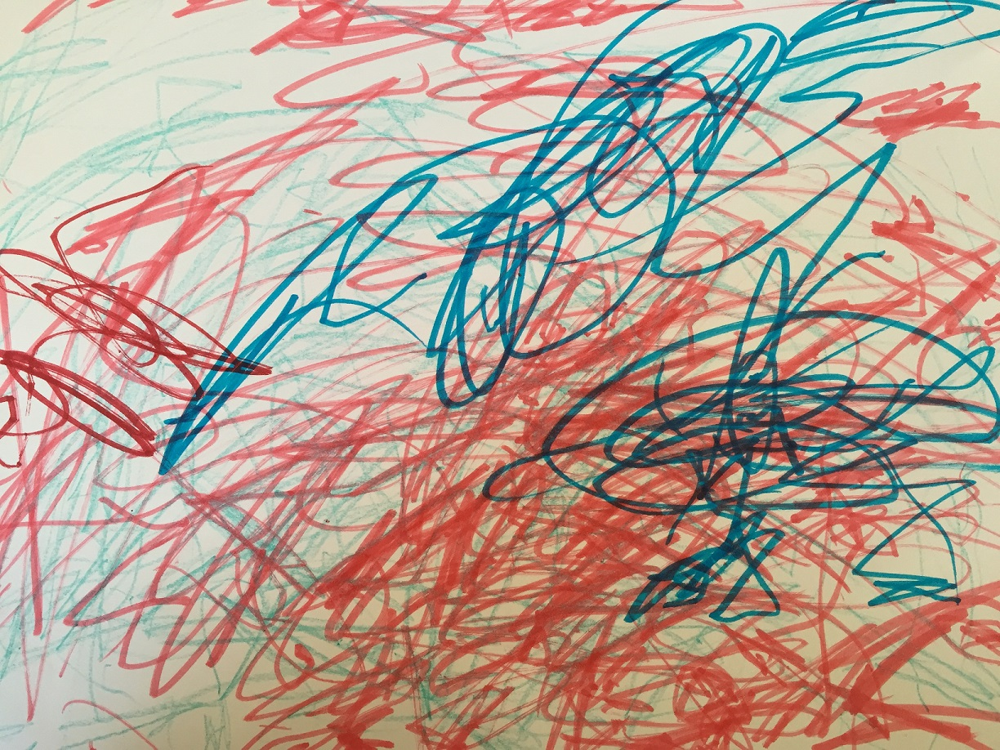

Tuesday, Third Week of Advent
Psalm 125; 2 Kings 2:9-22; Acts 3:17-4:4
Reflection by Cokey DeWeese
I wish I could be more like my dog Kobe, a 12 year old Black Lab – Golden Retriever mix. Kobe has been a treasured family member since he was eight weeks old. As far as I know he has never regretted a single yesterday, and he never worries about what tomorrow will bring. He wakes up every morning with his tail wagging and is present for each moment of his life — whether he is eating, going for a walk, chewing on his favorite toy, or taking a ride in the car. He is optimistic by nature — a glass is half full kind of guy — and is not burdened by worry or perfectionism.
The Christmas Season can be an especially trying time for those of us who are not as relaxed by nature as Kobe. Trying to find all of the right presents, buying and sending the right Christmas cards, baking Christmas cookies, decorating the house, buying and decorating a tree, attending holiday parties, preparing Christmas dinner — on top of working and taking care of day to day responsibilities — can easily become overwhelming. I usually breathe a huge sigh of relief as soon as Christmas dinner is on the table, because I can finally relax a little.
Every year I tell myself that I will start earlier with Christmas preparations so that I won’t feel so stressed about everything that needs to be done. To date this has not been a huge success.
But maybe this year can be different. One of my favorite Bible verses is John 14:27:
Peace I leave with you; my peace I give you. I do not give to you as the world gives. Do not let your hearts be troubled and do not be afraid.
As we all know, peace does not come from presents, parties or most of the other holiday traditions we follow. The inner peace that Jesus talked often seems elusive, even if we sincerely seek a closer relationship with God. The challenge of the Christmas season is that the busier we are, the less time we have to spend with God, and the less peaceful we feel.
I have no unique insights regarding this dilemma. But I do think Kobe is on to something — spending quiet time daily, staying well rested, living in the present and appreciating every day blessings all seem like a good place to start.
I wish everyone God's peace during this Advent season.
{kind=link}
Kobe